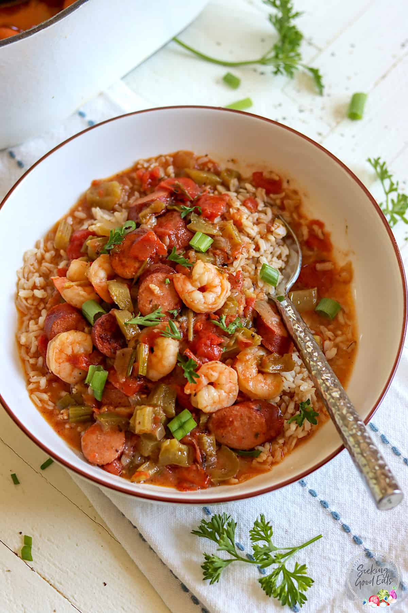

Ingredients
- 1 cup all-purpose flour
- ¾ cup bacon drippings
- 1 cup coarsely chopped celery
- 1 large onion, coarsely chopped
- 1 large green bell pepper, coarsely chopped
- 2 cloves garlic, minced
- 1 lb andouille sausage, sliced
- 3 quarts water
- 6 cubes beef bouillon
- 1 tbsp white sugar
- Salt to taste
- 2 tbsp hot pepper sauce (e.g. Tabasco), or to taste
- ½ tsp Cajun seasoning blend (e.g. Tony Chachere's), or to taste
- 4 bay leaves
- ½ tsp dried thyme leaves
- 1 (14.5 oz) can stewed tomatoes
- 1 (6 oz) can tomato sauce
- 4 tsp file powder, divided
- 2 tbsp bacon drippings
- 2 (10 oz) packages frozen cut okra, thawed
- 2 tbsp distilled white vinegar
- 1 lb lump crabmeat
- 3 lbs uncooked medium shrimp, peeled and deveined
- 2 tbsp Worcestershire sauce
Instructions
- Make the roux, whisk together flour and 3/4 cup bacon drippings in a large, heavy saucepan over medium-low heat until smooth
- Cook roux, whisking constantly, until it turns a rich mahogany brown color
- This can take 20-30 minutes; watch heat carefully and whisk constantly or roux will burn
- Remove from heat; continue whisking until mixture stops cooking
- Make the gumbo, place celery, onion, green bell pepper, and garlic into the work bowl of a food processor
- Pulse until all vegetables are very finely chopped
- Stir vegetables into roux, and mix in sliced sausage
- Cook over medium-low heat, stirring constantly, until vegetables are tender (~10-15 minutes)
- Remove from heat and set aside
- Combine water and beef bouillon cubes in a large Dutch oven or soup pot
- Bring to a boil over medium-high heat
- Stir until bouillon cubes dissolve, then whisk roux mixture into the boiling water
- Reduce heat to a simmer and mix in sugar, salt, hot pepper sauce, Cajun seasoning, bay leaves, thyme, stewed tomatoes, and tomato sauce
- Simmer soup over low heat for 1 hour
- Mix in 2 tsp of file gumbo powder at 45-minute mark
- Meanwhile, melt 2 tbsp bacon drippings in a skillet over medium heat
- Add okra and vinegar and cook for 15 minutes
- Remove okra with a slotted spoon and stir into the simmering gumbo
- Mix in crabmeat, shrimp, and Worcestershire sauce, and simmer until flavors have blended
(45 more minutes)
- Stir in 2 more tsp of file gumbo powder just before serving